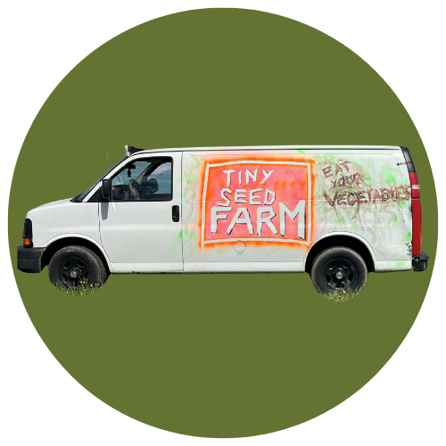

"Provide a projected earnings statement or pro forma Federal Schedule F to demonstrate profit potential for the farming conducted by the Beginning Farmer."
| Product | Quantity | Unit Price | Revenue |
|---|---|---|---|
| Vegetable CSA | |||
| Small Summer CSA Share (Weekly) | 91 | $540 | $49,140 |
| Small Summer CSA Share (Biweekly) | 61 | $270 | $16,470 |
| Friends & Family Summer CSA (Weekly) | 40 | $720 | $28,800 |
| Friends & Family Summer CSA (Biweekly) | 27 | $360 | $9,720 |
| Spring CSA Share | 50 | $150 | $7,500 |
| Flex CSA Share (various) | 25 | $400 avg | $10,000 |
| Vegetable CSA Subtotal (175 weekly equivalent) | $121,630 | ||
| Flower CSA | |||
| Full Bloom Bouquet Share (Weekly) | 19 | $400 | $7,600 |
| Full Bloom Bouquet Share (Biweekly) | 20 | $200 | $4,000 |
| Petite Bloom Bouquet Share (Weekly) | 14 | $300 | $4,200 |
| Petite Bloom Bouquet Share (Biweekly) | 14 | $150 | $2,100 |
| Flower CSA Subtotal (50 weekly equivalent) | $17,900 | ||
| Income Source | Amount |
|---|---|
| CSA Program (Vegetable + Flower) | $139,530 |
| Wholesale - Restaurant accounts | $85,000 |
| Wholesale - Retail/grocery | $45,000 |
| Farmers Markets | $48,000 |
| Other Direct Sales | $48,450 |
| Services (custom growing, consulting) | $12,000 |
| Other Income (grants, misc) | $18,000 |
| Less: Discounts/Refunds | ($1,500) |
| TOTAL GROSS INCOME | $394,480 |
| Expense Category | Amount |
|---|---|
| Cost of Goods Sold | $16,000 |
| Farming Supplies (seeds, amendments) | $105,000 |
| Shipping/Delivery | $4,000 |
| Labor Hired (wages) | $105,000 |
| Payroll Taxes & Processing | $17,000 |
| Rent - Land & Equipment (Kretschmann Farm) | $21,094 |
| Car/Truck & Fuel | $9,100 |
| Insurance | $10,000 |
| Utilities | $7,000 |
| Supplies & Materials | $48,000 |
| Repairs & Maintenance | $3,500 |
| Contractors | $12,000 |
| Interest Paid | $3,500 |
| Other Expenses (fees, office, marketing, etc.) | $29,400 |
| TOTAL EXPENSES | $390,594 |
| Gross Farm Income | $394,480 |
| Total Farm Expenses | ($390,594) |
| PROJECTED NET FARM PROFIT | $3,886 |
"Provide verification that the farming conducted by the Beginning Farmer will be a significant source of income for the applicant."
Tiny Seed Farm LLC represents the primary occupation and sole source of income for Todd Wilson. The farm operation constitutes 100% of the applicant's working activity and livelihood.
| Period | Gross Income | Source |
|---|---|---|
| Jan-Sep 2024 | $196,753 | QuickBooks P&L |
| Jan-Sep 2025 | $276,648 | QuickBooks P&L |
| YoY Growth | +40.6% |
| Year | Gross Income | Status |
|---|---|---|
| 2024 (annualized from 9mo actual) | ~$262,000 | Actual |
| 2025 (annualized from 9mo actual) | ~$369,000 | Actual |
| 2026 (projected) | $394,480 | Projected - Profitable |
Growth Trajectory: The farm has demonstrated consistent 40%+ annual revenue growth based on actual QuickBooks financial records, establishing a clear trajectory toward sustainable profitability as a full-time commercial operation.
"Describe the type of farming that will be conducted by the Beginning Farmer."
Tiny Seed Farm is a USDA Certified Organic diversified vegetable, cut flower, and gourmet mushroom operation located at 257 Zeigler Rd, Rochester, PA 15074 (Beaver County), in Western Pennsylvania. The farm is actively pursuing additional certifications including Real Organic Project certification and PA Preferred Organic status, expected in the coming weeks.
The farm produces over 40 varieties of vegetables and specialty crops including salad greens, tomatoes, peppers, cucumbers, squash, root vegetables, herbs, and seasonal cut flowers including dahlias, sunflowers, and mixed bouquet arrangements. Additionally, the farm cultivates gourmet mushrooms including shiitake, oyster, and lion's mane varieties.
The operation will cultivate approximately 10-12 acres in the 2026 season, utilizing greenhouse space for seedling production, high tunnels for season extension, a pack shed with walk-in cooler, mushroom production facilities, and shared equipment including tractors and specialized vegetable production implements. The farm leases land and equipment from Kretschmann Farm under a cost-sharing arrangement.
All farming practices comply with USDA National Organic Program (NOP) standards. The farm employs 2-4 seasonal workers during the growing season (approximately $105,000 in annual labor costs), with the owner (Todd Wilson) providing the majority of labor and 100% of all management decisions including crop planning, financial management, marketing, and customer relations.
Todd Wilson intends to continue farming this land long-term, coinciding with the landowner's plan to place the property into an Agricultural Land Trust to preserve it for future agricultural use.
I certify that this projected earnings statement is based on actual historical financial data from Tiny Seed Farm LLC's accounting records and current product pricing from tinyseedfarm.com, and represents a good-faith projection of 2026 farm operations. This farm operation represents my primary occupation and 100% of my working activity.